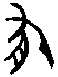

14 大有卦 火天大有
大有，元亨。初九，无交害，匪咎，艱則无咎。九二，大車以載，有攸往，无咎。九三，公用亨于天子，小人弗克。九四，匪其彭，无咎。六五，厥孚交如，威如，吉。上九，自天祐之，吉无不利。
【卦名】
今本：大有 帛書：大有 歸藏：大有 秦簡：右 上博簡：大有 清華簡：少右 海昏：大有
大有即豐收、富有之義。
「有」字本義為持有、佔有，引申又有豐收、富裕的意思。《春秋》桓三年「有年」《穀梁傳》：「五穀皆熟為有年。」又宣公十六年「大有年」。《說文》：「年，穀孰也，从禾千聲。《春秋傳》曰：大有年。」年字本是收成的意思，由於古代作物一年一收，所以就作為時間單位。有年即指豐收之年，大有年則是大豐收之年。《繫辭》：「富有之謂大業。」《雜卦》：「大有，眾也。」《序卦》：「與人同者物必歸焉，故受之以大有。」大有也是富有的意思。
有字在甲骨文與又字通用，劉興隆《新編甲骨文字典》認為，兩字皆作，並疑為（牛）的異體字，以畜養的牛為有，借牛以表示「有」義。因此「有」在古代可能是代表擁有財富的意思。演變到金文之後作，為以手取肉之狀，象獲取、佔有。《說文》則說：「不宜有也。《春秋傳》曰：日月有食之。」意思為原本不當有者而有之，而不是原本就有的。例如，日月原本是不當「食」（蝕）的，不當食而食才可說「有食之」。就如錢財，原本不屬於你的，現在變成屬於你了就是你「有」了錢財。
甲骨文有、又和右同一字源，因此秦簡與清華簡的「右」也通有。反過來，現今之「大有」也通「大右」。于省吾：「有者右也，下乾為大，上互兌為右，柔居尊位而眾陽右之，故曰自天右之也。」所謂互兌為右，因後天八卦方位中震東兌西，震在左而兌在右。
古文「右」即祐，幫助、輔助之義。「大右」意思是大的幫助、大的保祐，上九所說的「自天祐之，吉，无不利。」至於清華簡作「少右」，也就是「小右」則不得解。就卦象來說，乾健在內為大。不過小畜卦也是乾健在內，小則是意指六四陰爻畜養於乾體之內，陰為小，因此名為小畜。「小有」（小右）或許可能指的是六五陰爻居尊得位。
【卦義】
所有之大，富有天下。如日中天，照遍萬物。
卦象日在天上，內剛健而外文明。《象傳》：「火在天上，大有。君子以遏惡揚善，順天休命。」大有為君子剛健而明，照鑑於上，能夠抑惡揚善之象，所以豐富而大業。
外離明為擒獲，下乾陽為大，因此為大有，收獲很大的意思。離的字源本義為擒獲小鳥，本就有擒獲、「有」之義。下乾天為大，如大壯、大畜、泰（太）的「大」皆是取象自下卦的乾天。
就六爻來看，六五一陰以柔順與中庸之美德居於最尊貴的位置，統領五個陽爻，五陽皆歸於六五一陰。因此王弼說：「大有，包容之象也。」「處尊以柔，居中以大，體无二陰以分其應，上下應之，靡所不納，大有之義也。」
卦序上，大有與同人為相綜的一對卦，是繼泰、否而來的兩卦。《序卦》：「與人同者物必歸焉，故受之以大有。」泰為太平盛世，否卦為國家動亂，同人為周王會同諸侯以解決動亂，大有為天下又歸周王所有，天下太平，五穀豐登。
大有顯然是一個大吉之卦，但得此卦應謙虛自養，切莫因此而驕泰放逸，因此緊接在大有卦之後為謙卦，以告戒富有之人，不要為富不仁、多行不義，而當以謙虛自養。
大有，元亨。
- 彖曰：大有，柔得尊位大中，而上下應之，曰大有。其德剛健而文明，應乎天而時行，是以元亨。
- 象曰：火在天上，大有。君子以遏惡揚善，順天休命。
- 序卦：與人同者物必歸焉，故受之以大有。有大者不可以盈，故受之以謙。
- 雜卦：大有，眾也。
- 易之義：大有之卦，孫位也。
【今解】
大有，大亨。
大有卦是所有卦辭中最簡要的一卦，只有「元亨」兩個字。不過還好有《易傳》解說可循。《彖》曰：「大有，柔得尊位大中，而上下應之，曰大有。其德剛健而文明，應乎天而時行，是以元亨。」「柔得尊位大中」指六五，以柔居五之尊位，五為兩個中爻中較尊高者，故曰「大中」。「上下應之」，上指上九，與六五比鄰而應，下指九二。「其德剛健而文明」講的是上下二體，內剛健而外文明，六五應於下卦乾之九二，所以是應乎天。
鄭玄認為大有卦乃周公攝政之義：六五體離，處乾之上，猶大臣有聖明之德，代君為政，處其位，有其事而理之也。元亨者，又是能長群臣以善，使嘉會禮通，若周公攝政，朝諸侯於明堂是也。
遏惡揚善：制止罪惡，發揚美善。虞翻：「遏，絕。揚，舉也。乾為揚善，坤為遏惡，為順。」
順天休命：有兩種解釋。依王弼：「順夫天德，休物之命。」依程頤、朱熹，順天休命即順天命，「休」字形容天命之美善。程頤：「奉順天休美之命。」朱熹：「天命有善而无惡。」
初九，无交害。匪咎，艱則无咎。
象曰：大有初九，无交害也。
【今解】
因沒有相交而受害，並不是應有的罪咎。艱苦則沒有罪咎。
大有的初始階段，與富有之主（六五）沒有交集，因而受害。這不是因為自己有什麼罪咎。只要能夠艱苦，就能安全渡過，免於罪咎。
大有卦主爻為六五，九二與其相應，九三與其同功（三與五同功而異位），九四及上九與其比鄰，所有的陽爻中，唯有初九與六五完全沒有交集。《彖》傳說「大有，柔得尊位大中，而上下應之」，初九是唯一完全無法呼應到六五之君者，因此謂「無交害」。
交或可解釋為皎，明白、清楚。無交，不明白。初六在下，上為離日，初無日照之明，故曰無皎。
【字義】
无交害：兩種解釋。一是「無交之害」，與君王沒有交集，因而受害。二是無相害的意思，指原本初九會受到相害，但終而得免。無論那一種解釋，都意謂初九爻面臨了潛在的兵戈之害，此害並不是罪有應得，而是形勢使然，若能艱苦面對，則能免於罪咎。交或作皎，白、明的意思。無交害，即無顯著的傷害。或者，因為不明事理而受害。六五「交如威如」帛書易傳《二三子》作「絞如委如」，孔子解釋說：「絞，白也；委，老也。」「絞白也」即是取「皎」義。
匪咎：不是因為有罪咎。匪，非也。咎，罪咎。言初九可能受到的兵戈之害，不是因為自己犯了什麼錯，不是罪有應得。程頤：「言富有本匪有咎也，人因富有自為咎耳。若能享富有而知難處，則自无咎也。處富有而不能思艱兢畏，則驕侈之心生矣，所以有咎也。」
九二，大車以載，有攸往，无咎。
象曰：大車以載，積中不敗也。
【今解】
大車用以承載，若要遠行，沒有罪咎。
九二性情剛健而處事中庸，又與六五之君相應，所以足以受君王之所託而承擔重任，以走長遠的路途。
【字義】
大車以載：大車，載物多，且可行遠，比喻君子任重而道遠。以，用，用以。大車以載，大車用以承載。
有攸往：有所往，有遠往。前言大車以載，因此足以行遠，任重而道遠。攸，所，遠。攸往，所往，或遠往，出門前往某地。王弼：「健不違中，為五所任，任重不危，致遠不泥，故可以往而无咎也。」
九三，公用亨于天子，小人弗克。
象曰：公用亨于天子，小人害也。
【今解】
公侯和天子聚餐，小人則不堪此任。
若是君子、大人，可以直達天子，與天子嘉會。但反之，若是小人，居於此位反而無法擔當，直接受害。
九三為多憂之位，與五同功。居互體兌之下，爻變之後又居坎下兌上，因此本為凶險之地。若是君子、大人居之，逢大有之世，可直達六五而免於凶險。若是小人，則無以應對，故為凶。
【字義】
公用亨于天子：當作「公用享於天子」。公為諸侯國國君之通稱，享通饗，饗宴、聚餐的意思。公用饗於天子，言公受到天子之寵愛而受到邀請共宴，其吉凶不言而喻。古亨、享本相通，但《周易》中兩字用法有別。帛書中今本作「享」者多作「芳」，此爻則作「公用芳於天子」。《左傳》僖公二十五年晉文公筮問是否該出兵救周襄王：「筮之，遇大有之睽，曰吉，遇公用享于天子之卦也。戰克而王饗，吉孰大焉？」總合以上資料，「亨」當作「享」，並通「饗」。卜偃解釋此卦說「天為澤以當日，天子降心以逆公」，這是以上離為公，下乾為天子。因九三為下卦乾（天子）接近上離（公、諸侯）的一爻，下體爻變成兌為悅，因此言「天子降心以逆公」。或以九三為公，此源自京房易，以初為元士，二為大夫，三為三公，四為諸侯，五為天子，六為廟堂。故九三曰「公」。
小人弗克：平凡百姓無法勝任。小人，指無官位、無權力的平凡百姓。
【筮例】
《左傳》僖公二十五年晉文公筮問救襄王（625BC）得大有之睽，即大有卦的九三爻。
周襄王異母弟叔帶叛變，引進狄人，自立為王，周襄王因此逃到鄭國，並向秦晉兩國求救。
眼見秦穆公大軍已經在黃河邊準備要迎接襄王，晉文公重耳（公元前697～628年）由於才剛結束近20年流亡生涯回到晉國當上國君，忙於重建國政，擔心出兵將導致國內政局不穩，在迎與不迎襄王之間舉棋不定。這時他的謀臣也是舅舅狐偃勸進，於是文公為此請卜偃分別以卜、筮來決疑，結果都是大吉。
他所筮得的是大有之睽，爻辭說「公用享於天子」（今本享作亨），卜偃解釋說：「戰克而王饗，吉孰大焉？且是卦也，天為澤以當日，天子降心以逆公，不亦可乎？」這是說大王將戰勝，而周天子將因此宴請大王聚餐，還有比這更吉的嗎？而且這一卦，乾天變成澤兌而面對離日，是天子（乾天）的寵愛從天而降（降心）來迎接大王（逆公）的卦象。
於是晉文公出兵，果然成功送襄王回周並殺了叛亂的叔帶，因此得到了襄王的封賞。
九四，匪其彭，无咎。
象曰：匪其彭，无咎，明辨晢也。
【今解】
不炫耀，保持低調，無咎。
處於富有的極盛時候，但太接近權力核心，不只憂慮特別多，還要處處避免嫌疑。此時應該體認自己極盛之後可能將衰，伴君如伴虎，最好能懂得低調以明哲保身，認清自己的地位，則能免於罪咎。
【字義】
匪其彭：「匪其彭」即「非其彭」，有三種解釋。一、以彭為盛大貌。王肅：「彭，壯也。」程頤：「彭，盛多之貌。」非其彭，捨棄盛大，保持低調，以免於罪咎。因九四處近君多懼之地，為六五之近臣，本身陽剛又不當位，在大有（富有）之世，反而更應該保持低調，以免受到君王的猜忌。朱熹：「彭字，音義未詳。《程傳》曰『盛貌』，理或當然。」二、 彭作旁，《釋文》：「子夏作旁。」姚信：「彭，旁也。」王弼：「專心承五，常匪其旁，則无咎矣。旁謂三也。」依王弼，非其彭即專心，心無旁騖之義。三、虞翻做「匪其尫」：「匪，非也。其位尫。足尫，體行不正，四失位，折震足，故尫。變而得正，故无咎。尫或作彭，作旁聲，字之誤。」「四在乾則尫；在坤為鼠；在震噬胏得金矢；在巽折鼎足；在坎為鬼方；在離焚死；在艮旅于處，言无所容；在兌睽孤孚厲。三百八十四爻，獨无所容也。」尫有折足、斷腳的意思，或指身有殘疾而為巫者，《左傳》、《禮記》所說之巫尫。古時天旱時往往燒巫尫或曝曬巫尫以求雨。匪其尫，不以尫求雨解決旱災，沒有罪咎。《左傳》僖公二十一年夏，大旱，公欲焚巫尪，臧文仲所謂「巫尪何為」也。《禮記．檀弓下》：「歲旱，穆公召縣子而問然。曰：天久不雨，吾欲暴尪而奚若？」《荀子·王霸》：「百姓賤之如尪，惡之如鬼。」《韓詩外傳》：「太平之時，無瘖、聾、跛、眇、尪蹇、侏儒、折短。」
明辨晢也：明辨而清晰之智慧。朱熹：「能不處其盛而得无咎者，蓋有明辨之智也。晢，明智也。賢智之人，明辨物理，當其方盛則知咎之將至，故能損抑不敢至於滿極也。」
六五，厥孚交如，威如，吉。
- 象曰：厥孚交如，信以發志也。威如之吉，易而无備也。
- 二三子：卦曰：「絞如委如，吉。」孔子曰：「絞，白也；委，老也。老白之行…，故曰吉。」
【今解】
誠信而能與人相交，且很有威嚴，吉。
六五處於最尊貴的位置，柔順而中庸，而且有陽剛的一群賢能之士來輔佐。既有誠信與群臣交心，又有威嚴，受人敬重，吉。
六五為大有卦主爻，大有卦的卦義也是從六五而來，所以《彖》曰：「柔得尊位大中，而上下應之，曰大有。」柔得位指六為陰為柔，居於「五」這個君位，大中指五的位置，是上卦的中爻，喻指具中庸的美德，上下應之指上九及九二兩爻與其相應。這是君王能得眾臣輔助的卦象，因此而能夠富有天下。原本五之尊位宜以九居之，六為陰柔，通常意謂著君王之柔弱無能，但大有六五與上下陽卦相應，柔君有能臣之輔，因此為吉。由於君德柔弱，因此若能有威信則吉，反之則凶。
【字義】
厥孚交如威如：其誠信能夠與人相交，又有君王之威嚴。此言君王具有威信則吉。厥，其也。孚，信，誠信。威如，有威嚴。程頤：「上下孚信相交也。以柔居尊位，當大有之時，人心安易，若專尚柔順，則陵慢生矣，故必威如則吉。」朱熹：「大有之世，柔順而中，以處尊位。虛己以應九二之賢，而上下歸之，是其孚信之交也。然君道貴剛，太柔則廢，當以威濟之，則吉。」交亦可通皎，明白、顯著。皎如，形容誠信清楚表現於外，相當顯著的樣子。《二三子》做「絞如委如」，引孔子曰：「絞，白也；委，老也。老白之行…故曰吉。」 「絞白也」即是取「皎」義。俞樾：「交當讀為皎，六五一爻居外卦離體之中，為明之主，故其信皎然。皎之言明也。《詩．大車篇》謂予不信有如皦日，此即厥孚皎如之義。」老則是敬重之稱，亦通威。《左傳》閔公元年魯桓公問成季，得大有之乾，卜楚丘之父解釋說「敬如君所」，敬如即威如也。
威如之吉，易而无備也：易為平易、容易、簡易。程頤解釋為易慢，即殆慢。威如之所以為吉，因可平易而不用防備。孔穎達：「所以威如得吉者，以己不私於物，唯行簡易，无所防備，物自畏之，故云易而无備也。」
【筮例】
《左傳》閔公元年魯桓公筮問次子成季的出生，得大有之乾：
成季之將生也，桓公使卜楚丘之父卜之。曰：「男也。其名曰友，在公之右。間于兩社，為公室輔。季氏亡，則魯不昌。」又筮之，遇大有之乾，曰：「同復于父，敬如君所。」及生，有文在其手曰「友」，遂以命之。
魯桓公有四個兒子，繼承魯國國君的魯莊公為嫡長子，其他三個兄弟庶長子為慶父、庶次子叔牙，及嫡次子季友（成季）都被魯莊公封為卿，其後代也因此形成了三大家族，分別為慶父的孟孫氏（又稱仲孫氏、孟氏），叔牙的叔孫氏，以及季友的季孫氏（季氏），這三大家族對於魯國國政一直有很深厚的影響，特別是季氏勢力最為龐大。由於三大家族為魯桓公之後，所以史稱「三桓」。
嫡次子季友要出生之前，魯桓公為他又卜又筮，想要了解他的一生。
卜楚丘之父說：「他所得到的信賴會像他的父親一樣，所受的尊敬有如國君。」在小孩出生時，小孩的手上竟然有「友」字的紋路，因此就以友做為他的名字。
卜楚丘又解釋大有之乾說：「同復于父，敬如君所。」
「敬如」即爻辭中的「威如」。「同復于父」者，這個父指的是魯桓公，桓公為君，於象為乾，乾為君。六五爻變，上離卦變為乾，火從於天為同人之象，因此說「同復於父（君）」。又帛書本「孚」皆作「復」，大有六五即作「闕復交如」。「同復於父」即「同孚於君」。孚（復）即取自爻辭。「厥孚交如」意思為誠信能夠與人相交，此意指君臣能夠交心，彼此信賴。
後來桓公死後莊公立，莊公的三兄弟也就是後來魯國「三桓」家族的第一代，當中季友是最為忠誠與擁戴莊公的，後來更成功雍立並輔佐僖公。而季友所發展出的「季孫氏」家族也成為三桓中勢力最龐大的一支。庶長子慶父不但素行不良，與莊公夫人哀姜私通，還無所不用其極的要爭奪王位，甚至殺了閔公以稱王，因此後世常以「慶父」為作亂者的代名辭，並有「不去慶父，魯難未已」之說。至於叔牙，則是居於兩者之間，但因對於兩邊鬥爭表錯立場而遭賜死。
上九，自天祐之，吉无不利。
- 象曰：大有上吉，自天祐也。
- 《繫辭》：易曰「自天祐之，吉无不利」。子曰：「祐者，助也。天之所助者順也，人之所助者信也。履信思乎順，又以尚賢也。是以自天祐之，吉无不利也。」
【今解】
來自上天的保佑，吉，無往而不利。
六五已是尊位，上九處大有卦的極盛，又為六五之君所供養（六五承上九，柔承剛為順為吉），因此像是太上皇，較六五而更富有天下，因此大吉，無往而不利。
繫辭傳引孔子的注解，意思大概是說：天之所以助人是因人順天命，人之所以助人是因為人有信。行為有信（履信）並想到要順乎天命，然後又能夠崇尚賢能。因此有來自上天的保祐，吉而無所不利。這裡所說的履信乃是盡人事，思乎順為聽天命。
【字義】
祐：助也。自天祐之，有上天的保祐、幫助。秦簡卦名作「右」，清華簡作「少右」，右通祐。
【彖傳注】
大有，柔得尊位大中，而上下應之，曰大有。其德剛健而文明，應乎天而時行，是以元亨。
得尊位大中，而上下應之，曰大有：以六五主爻解釋大有卦。大有為乾坤旁通陰陽交換而來，乾卦九五至坤二，成大有與師。六五雖柔，居五之尊位又得中，下應九二，與上九比應，故曰「得尊位大中而上下應之」。
其德剛健而文明：以上下二體的卦德解釋大有。內乾為剛健，外離為文明。
應乎天而時行，是以元亨：以六五爻解釋「元亨」。六五與下卦乾天相應，為應乎天。與上九比應，亦是應乎天。時行者，乾九五至坤二，成大有與師。王弼：「德應於天，則行不失時矣。剛健不滯，文明不犯，應天則大，時行無違，是以元亨。」
“大有卦的卦義也是從六二而來”中“六二”應為“六五”。
“大有卦的卦義也是從六二而來”中“六二”應為“六五”。